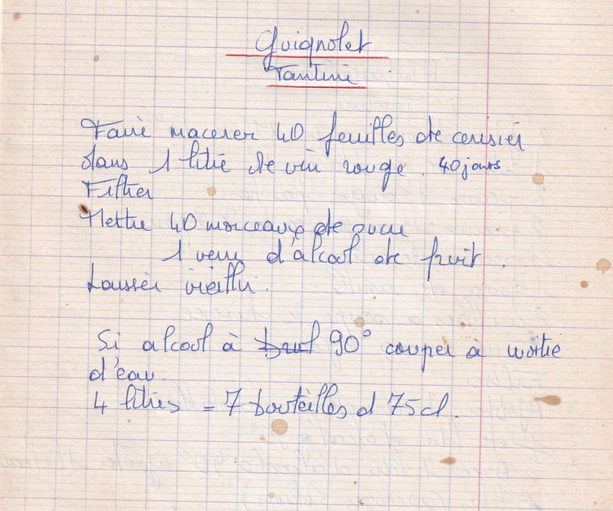

Guignolet
Tantine

PREPARATION
- Faire macérer 40 feuilles de cerisier dans 1 litre de vin rouge 40 jours
- Filtrer
- mettre 40 morceaux de sucre
- 1 verre d'alcool de fruit
- Laisser vieillir
- *Si alcool à 90° couper à moitié d'eau
- 4 litres = 7 bouteilles de 75 cl